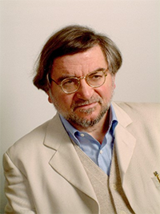
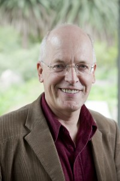
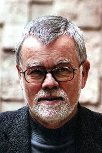
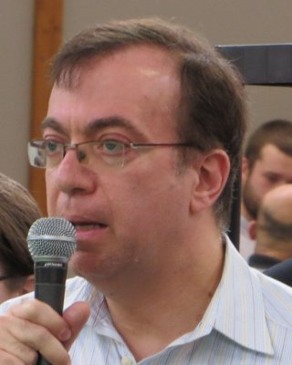
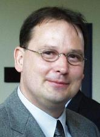
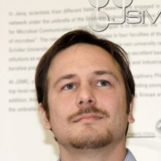

Summer School
Pre-conference Tutorials / Summer Schoool
From June 14th, to June 16th we will offer two pre-conference tutorial days, consisting of several intorductory sessions about code biology.
The tutorials are be best suited for students and junior researchers to get a condensed introduction into code biology.
Experienced researchers will give an overview about recent topics in code biology.
Detailed information about the contents of the tutorials will be published here soon.
The tutorials, together with the main conference, constitute the Jena Summer School in Code Biology. You may earn a certificate by participating in both events.
Tutorials – Program
The tutorial program consists of two basic courses introducing the two foundational theories of communication, which form the theoretical base of code biology: information theory and semiotics. Then we will have a lecture on code biology itself, followed by a course on a particular biological code system: the origin and evolution of the genetic code. Furthermore, we will investigate the relation between code biology, cell theory, and autopoiesis. Participants will not only obtain an overview in the mentioned fields but also practical skills for code analysis in living systems.
Participation in the tutorial program can be complemented by participation in the conference. The tutorial fee would include the morning session of Wednesday. Note that it is also possible to bring a poster. Please contact the organizers in case of any questions.
Sunday (14.06.2015)
19:00 – 21:00 Tutorial Reception, Place to be announced
Monday (15.06.2015)
9:30 – 12:00 Infomation Theory I (Dennis Görlich / Peter Dittrich)
13:00 – 15:00 Cell Theory (Jannie Hofmeyer)
16:00 – 19:00 Semiotics (Winfried Nöth)
Tuesday (16.06.2015)
8:00 – 10:00 Discussions and Exercises (self-organized during breakfast)
10:00 – 12:00 Code Biology (Marcello Barbieri)
14:00 – 16:00 Origin and Evolution of the Genetic Code (Eörs Szathmary)
16:30 – 18:00 Information Theory II (Daniel Polani)
18:30 – 22:00 Conference Reception, Place: Cafeteria Zur Rosen (subject to change)
Tutorial Lectures
 |
Prof. Dr. Marcello Barbieri Professor of Embryology (University of Ferrara, Italy) http://www.biosemiotica.it/marcellobarbieri.html Course: Code Biology |
 |
Prof. Dr. Jannie Hofmeyr Professor of Biocomplexity and Biochemistry (University of Stellenbosch, South Africa) http://blogs.sun.ac.za/complexity/test/jan-hendrik-hofmeyr/ Course: Cell Theory |
 |
Prof. Dr. Winfried Nöth Professor of English Linguistics and Semiotics (University of Kassel, Germany) and Professor of Cognitive Semiotics (São Paulo Catholic University, Brazil) Course: Semiotics |
| Prof. Dr. Eörs Szathmary Professor of Biology ( Eötvös Loránd University, Budapest, Hungary). Faculty of the PARMENIDES FOUNDATION, member of the Board of THE KONRAD LORENZ INSTITUTE FOR EVOLUTION AND COGNITION RESEARCH. http://www.colbud.hu/fellows/szathmary.shtml Course: Origin and Evolution of the Genetic Code |
|
 |
Dr. Daniel Polani Professor of Artificial Intelligence (University of Hertfordshire, UK) http://homepages.herts.ac.uk/~comqdp1/ Course: Information Theory |
 |
Prof. Dr. Peter Dittrich Professor of Bio Systems Analysis (Friedrich Schiller University Jena, Germany) http://users.minet.uni-jena.de/~dittrich/ Course: Information Theory / Molecular Code Analysis |
 |
Dr. Dennis Görlich Researcher at the Institute of Biostatistics and Clinical Research (Westfälische Wilhelms-Universität Münster, Germany) https://www.uni-muenster.de/forschungaz/person/19640?lang=en Course: Information Theory / Molecular Code Analysis |